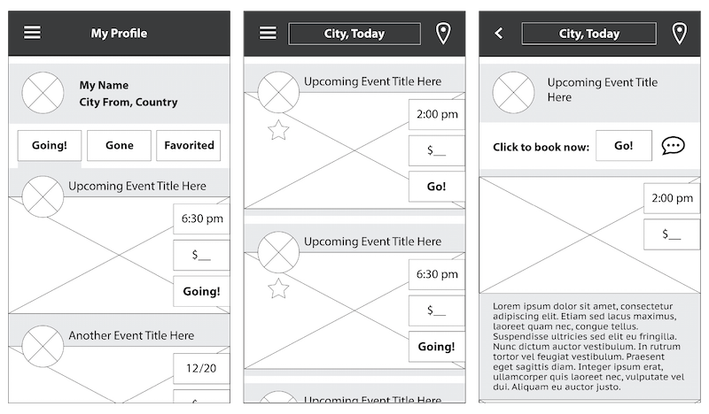

Houseflies
Adobe After Effects, 2014
Animation using text as motion and behavior.


Trees
Photography, 2013

Spring Issue
Adobe Illustrator, 2014
Cover art and layout for the launch of the Undergraduate Research Journal of Psychology at UCLA.


Map of Octavia
Adobe Illustrator, 2013
Inspired by Italo Calvino's book of Invisible Cities, exploring techniques of space, stroke weight, and text as texture.

Deck of Cards
Adobe Illustrator, 2012
Playing cards that explore the theories, interaction, and illusions of color.


Changing Faces
Processing, 2013
Manipulating a drawing from Bruno Mari's collection of faces, with the objective of parameterizing the face to depict a range of emotions while learning code within the context of visual arts.

Sway
Adobe Illustrator and CSS, 2015
LA HACKS submission 2015, working as conceptual and visual designer in a team of two, alongside developer.


Sway is an online platform for creating and sharing real-time playlists, giving control of the music to the listener.
Listeners can sway to the music while swaying song choices by upvoting.
Music plays from a single device with a randomized DJ user id, generating a playlist which can be accessed and added to from any other device.

Documentation of assets and brand identity.


FriendsWithYou
Adobe Illustrator, 2014
Concept wild postings advertising an LA book launch for design group WeAreFriendsWithYou. Posters explore message through information hierarchy and typography.


UX Redesign for iOS
Adobe Illustrator, 2014
Concept work, proposal for redesign of UI and UX for iPhone lock screen and home screen as notification center.

Wireframes and visuals for lock screen, home screen, and home action screens.


UI/UX for Vivgo
Adobe Illustrator, 2015
Working as Head of Experience and Visual Design for a social travel startup's mobile application release.

Wireframes and visuals for various app screens, including profile, experience, experience filters, and social integration.



Documentation of assets and brand identity.


UX Redesign for Darling
Adobe Illustrator, 2014
Concept work, class assignment proposal for redesign of UI and UX for Darling Magazine's website and mobile view.

Darling's existing website clutters its content and focuses too heavily on pushing the user to subscribe.
Redesign involves a landing page that displays and separates Darling's two main products (monthly print magazine and online content):


Landing page Web view.
Bottom left: Existing landing page on mobile.
Bottom right: Redesigned landing page. Tells user what Darling's message and products are.

Example of existing content page:

Navigation and grid changes in an effort to help user keep track of their place and content.


Buttons and styles aim to maintain Darling's blog-like feel while providing clear and unique navigation:


FriendsWithYou
Adobe InDesign, 2014
Book design and layout for works by design group FriendsWithYou, exploring information hierarchy, grid, and text as texture.


Bnw
Photography, 2014
Dora Parnanen
Student of Design Media Arts at the University of California, Los Angeles.
Education
University of California, Los Angeles
BA in Design Media Arts, 2016
Freestlye Academy of Communication Arts and Technology
Film, English, and Design
Technical Skills
Illustrator
InDesign
HTML, CSS, JavaScript
Photoshop
Final Cut Pro
After Effects
Experience
Vivgo
Winter 2014 - current (Los Angeles, CA)
Lead experience and visual mobile application designer for social travel startup.
Idean
Summer 2014 (Palo Alto, CA)
Working as a User Experience Design Intern on projects for and with clients.
The Influence
Spring 2014 (Los Angeles, CA)
Helping launch a celebrity street stye website, gathering and editing content.
VividWorks @
Dwell On Design Expo
and WestEdge Design Fair
2012, 2013, 2014, and 2015 (Los Angeles, CA)
In charge of competition booth on trade show floor, demonstrating VividWorks 3D augmented-reality software to potential partners and clients.
The Cooking Tree
Fall 2011 to Summer 2012 (Los Altos, CA)
Video production intern for internet-based cooking series, working in all aspects of prodution including lighting, audio, and editing. End project was directing and producing my own episode to be added to the series.
Finnish Language School of Silicon Valley
2008 to 2012 (Sunnyvale, CA)
Teaching Finnish language and communication skills to groups of elementary aged students.
Luoda Production Oy.
Summer 2011 (Helsinki, Finland)
Working as a production intern on set to help film and produce a promo video for this Finnish start-up company.
Find me at
ddorasofia@gmail.com
Additional portfolio content available upon request.